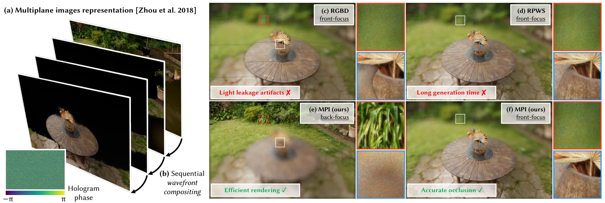
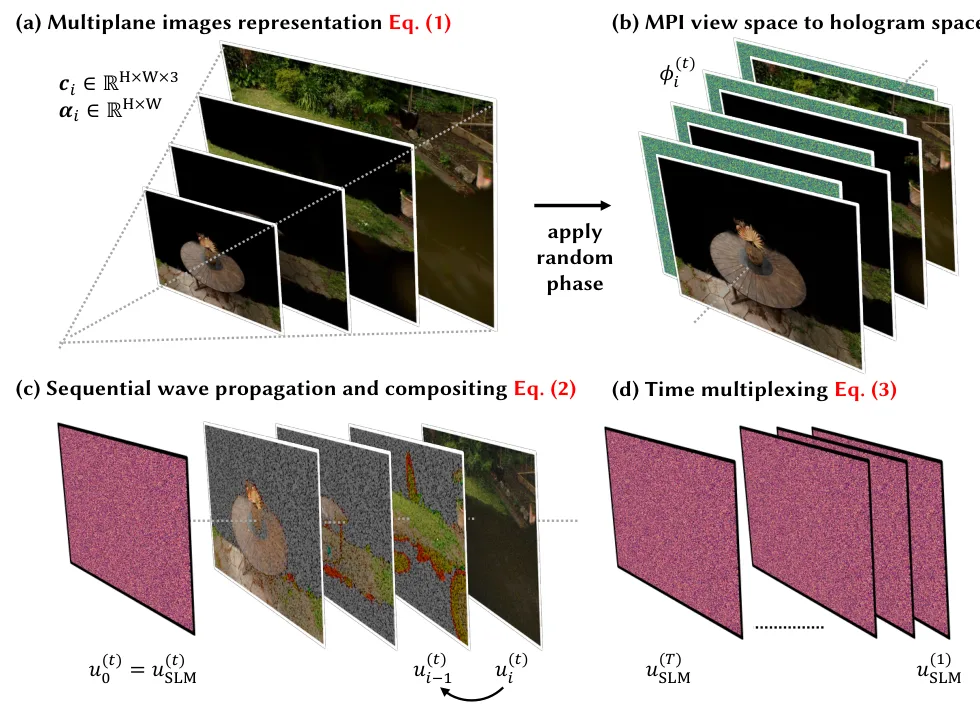
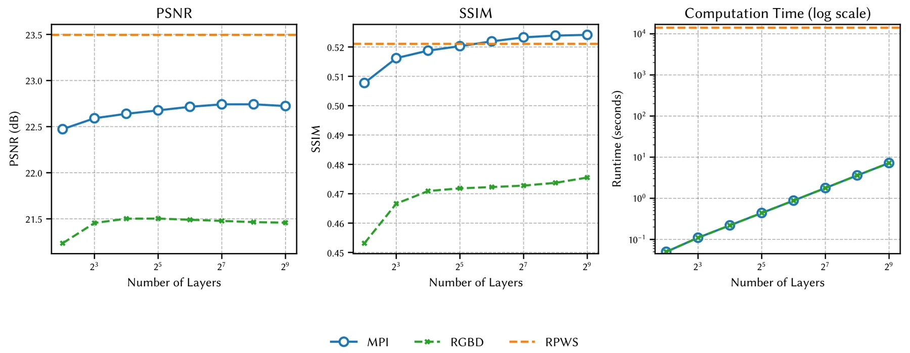
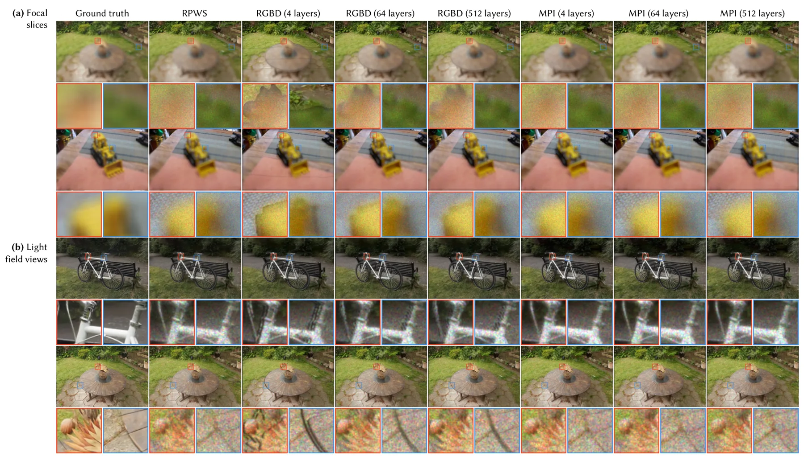
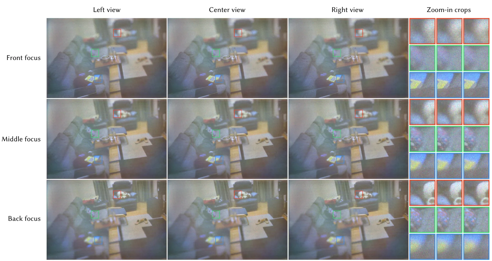
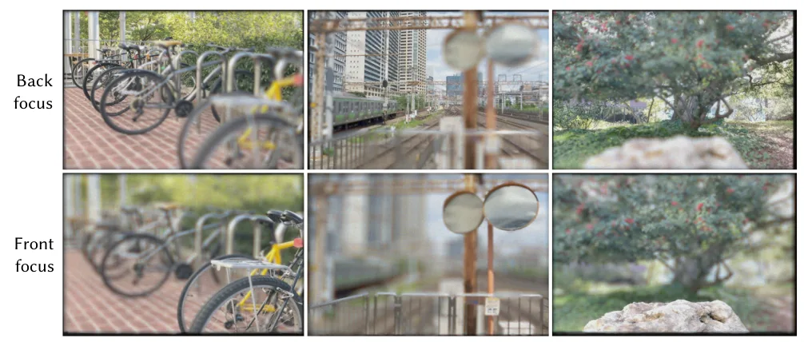
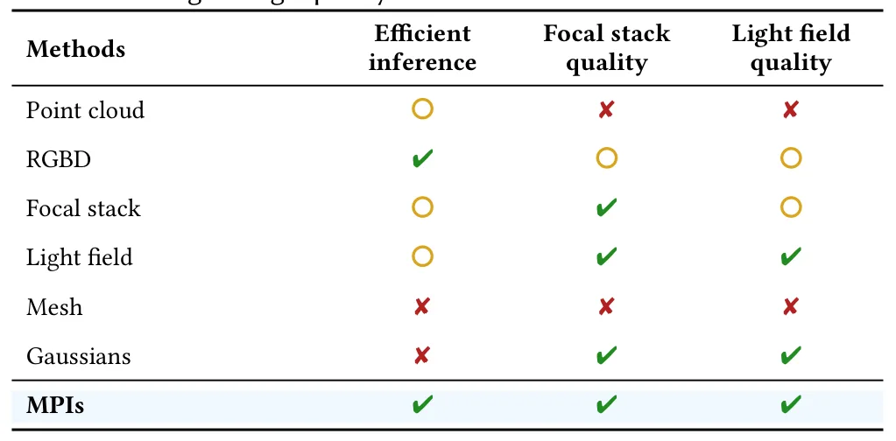

面向三维全息显示的 Multiplane Image 快速波动光学渲染Fast Wave-optics Rendering of Multiplane Images for 3D Holographic Displays
对三维重建内容的显示链路有系统价值且速度结果突出，但贡献是渲染/显示，不是重建、定位或建图算法。
一句话工作总结
以 MPI 加速三维内容到全息图的波动光学渲染，报告相对 primitive-based CGH 最高 250,000× 加速。
摘要
本文提出基于 multiplane images（MPI）的 wave-optics rendering pipeline，用于高效、高质量全息图合成，将三维重建和 novel view synthesis 内容转换为适配 3D holographic displays 的表示。摘要报告其 MPI-based CGH 相对先进 primitive-based CGH 最高加速 250,000 倍，同时保持相近图像质量；相对传统 layer-based CGH 则显著提高图像质量。方法在多种三维场景数据上通过仿真与实拍验证了 3D focal stack 和 4D light field reconstruction。
Recent advances in neural rendering have unlocked unprecedented capabilities in 3D reconstruction and novel view synthesis, giving rise to applications such as virtual fly-throughs of a 3D scene reconstructed from a set of sparse, casually captured images. However, these renderings are viewed on a computer screen or conventional VR headsets as 2D images, greatly limiting the perceptual realism and immersiveness of such experiences. The rapid development in novel 3D scene representations calls for dedicated rendering algorithms that convert these readily-available 3D contents into formats that are compatible with emerging 3D display technologies, such as holographic displays. In this paper, we propose a wave-optics rendering pipeline that works with multiplane images (MPIs) for efficient and high-quality hologram synthesis. Our MPI-based computer-generated holography algorithm greatly outperforms state-of-the-art primitive-based CGH algorithms in terms of runtime, achieving speedups up to 250,000x while achieving comparable image quality, and significantly outperforms conventional layer-based CGH algorithms in terms of image quality. We validate our method extensively on a wide variety of 3D scene datasets both in simulation and through experimentally captured results, showing exceptional 3D focal stack and 4D light field reconstruction performance without sacrificing efficiency.
中文解读摘录
图表/页面预览
{kind=link}

{kind=link}

{kind=link}

{kind=link}

{kind=link}

{kind=link}

{kind=link}
